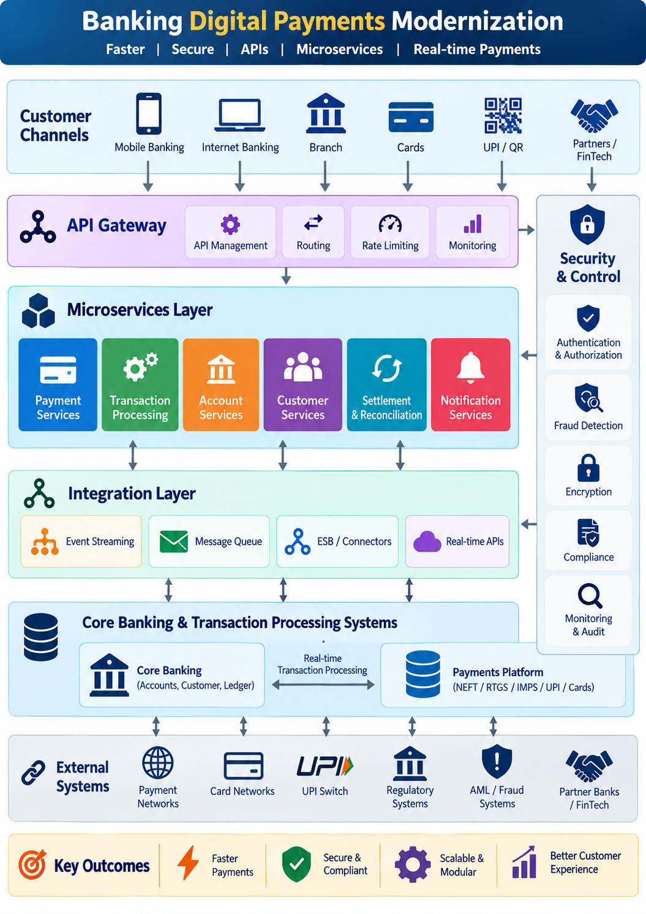

Banking customers increasingly expect fast, secure and always-on digital payment experiences across mobile banking, internet banking, cards, UPI, branches and partner ecosystems. Modernizing the payment landscape requires more than replacing individual applications. It requires a scalable architecture connecting customer channels, APIs, microservices, integration platforms, core banking and external payment ecosystems.
This representative, non-confidential case study illustrates a digital payments modernization program focused on creating a modular, API-led and secure banking platform capable of supporting real-time transactions and future digital products.
Program Objective: Modernize digital payment capabilities to improve speed, scalability, security, integration and customer experience while maintaining reliable connectivity with core banking and external payment networks.
The modernization approach separates customer channels, API management, business services, integration, core banking and external systems into scalable architectural layers.
Digital and assisted channels provide a consistent entry point into the banking ecosystem.
The API Gateway provides a controlled entry point for digital channels and partner applications.
Business capabilities are decomposed into independently scalable services that support faster change and improved modularity.
The integration layer connects microservices with core banking, payment platforms and external ecosystems.
The modernization architecture continues to integrate with core banking capabilities covering accounts, customers and ledger processing, together with payment platforms supporting multiple transaction rails.
External connectivity enables interaction with payment networks, card networks, UPI infrastructure, regulatory systems, AML/fraud platforms and partner banks or FinTech organizations.
Security is designed as a cross-cutting capability across customer channels, APIs, services, integrations and payment processing.
Customer Channel → API Gateway → Payment / Transaction Service → Integration Layer → Core Banking / Payment Network → Settlement & Reconciliation → Notification
The architecture supports a consistent processing model while allowing individual services to evolve independently. Real-time integration can be used where immediate transaction processing is required, while asynchronous messaging can support selected downstream processes.
Define modernization objectives, business outcomes, scope, target capabilities, stakeholders and program governance.
Assess existing payment applications, APIs, interfaces, core banking dependencies, transaction flows, security controls and operational constraints.
Define the target API, microservices and integration architecture, modernization waves, technology roadmap and migration strategy.
Develop services, APIs, integration components, security controls, monitoring capabilities and external-system connectivity.
Execute functional, integration, performance, security, resilience, user-acceptance and payment-network certification testing.
Execute migration waves, cutover planning, operational readiness, business validation and controlled production deployment.
Monitor transaction flows, resolve production issues, validate performance and stabilize payment operations.
Expand API capabilities, introduce additional services, optimize performance and continuously improve customer and operational experiences.
Banking payments modernization is an enterprise transformation initiative rather than a standalone technology upgrade. Success depends on connecting customer channels, APIs, microservices, integration platforms, core banking, payment networks and security capabilities within a governed delivery model. Strong program leadership keeps technology modernization aligned with business outcomes, regulatory expectations and customer experience.